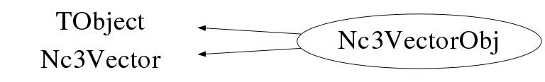

class Nc3VectorObj: public TObject, public Nc3Vector
Class Nc3VectorObj Handling of 3-vectors in various reference frames. This class is meant to provide an Nc3Vector object which is derived from TObject such that it can be stored in e.g. TObjArray etc... and that it can be written out using the ROOT I/O machinery. Example : Float_t a[3]={1,2,3}; Float_t ea[3]={0.01,0.02,0.03}; Float_t b[3]={4,5,6}; Float_t eb[3]={0.04,0.05,0.06}; Nc3Vector v,w; v.SetVector(a,"car"); v.SetErrors(ea,"car"); w.SetVector(b,"car"); w.SetErrors(eb,"car"); Nc3Vector cross=v.Cross(w); Nc3Vector add=v+w; Nc3VectorObj vec1(cross); Nc3VectorObj vec2; vec2.Load(add); vec1.Data(); vec2.Data(); --- Author: Nick van Eijndhoven 18-oct-1999 Utrecht University - Modified: NvE $Date: 2010-03-19 11:10:02 +0100 (Fri, 19 Mar 2010) $ NCFS
Function Members (Methods)
public:
| Nc3VectorObj() | |
| Nc3VectorObj(Nc3Vector& q) | |
| Nc3VectorObj(Nc3VectorObj& q) | |
| virtual | ~Nc3VectorObj() |
| void | TObject::AbstractMethod(const char* method) const |
| virtual void | TObject::AppendPad(Option_t* option = "") |
| virtual void | TObject::Browse(TBrowser* b) |
| static TClass* | Class() |
| virtual const char* | TObject::ClassName() const |
| virtual void | TObject::Clear(Option_t* = "") |
| virtual TObject* | TObject::Clone(const char* newname = "") const |
| virtual Int_t | TObject::Compare(const TObject* obj) const |
| virtual void | TObject::Copy(TObject& object) const |
| Nc3Vector | Nc3Vector::Cross(Nc3Vector& q) const |
| virtual void | Nc3Vector::Data(TString f = "car", TString u = "rad") const |
| virtual void | TObject::Delete(Option_t* option = "")MENU |
| virtual Int_t | TObject::DistancetoPrimitive(Int_t px, Int_t py) |
| Double_t | Nc3Vector::Dot(Nc3Vector& q) |
| virtual void | TObject::Draw(Option_t* option = "") |
| virtual void | TObject::DrawClass() constMENU |
| virtual TObject* | TObject::DrawClone(Option_t* option = "") constMENU |
| virtual void | TObject::Dump() constMENU |
| virtual void | TObject::Error(const char* method, const char* msgfmt) const |
| virtual void | TObject::Execute(const char* method, const char* params, Int_t* error = 0) |
| virtual void | TObject::Execute(TMethod* method, TObjArray* params, Int_t* error = 0) |
| virtual void | TObject::ExecuteEvent(Int_t event, Int_t px, Int_t py) |
| virtual void | TObject::Fatal(const char* method, const char* msgfmt) const |
| virtual TObject* | TObject::FindObject(const char* name) const |
| virtual TObject* | TObject::FindObject(const TObject* obj) const |
| virtual Option_t* | TObject::GetDrawOption() const |
| static Long_t | TObject::GetDtorOnly() |
| void | Nc3Vector::GetErrors(Double_t* e, TString f, TString u = "rad") const |
| void | Nc3Vector::GetErrors(Float_t* e, TString f, TString u = "rad") const |
| virtual const char* | TObject::GetIconName() const |
| virtual const char* | TObject::GetName() const |
| Double_t | Nc3Vector::GetNorm() |
| virtual char* | TObject::GetObjectInfo(Int_t px, Int_t py) const |
| static Bool_t | TObject::GetObjectStat() |
| virtual Double_t | Nc3Vector::GetOpeningAngle(Nc3Vector& q, TString u = "rad") |
| virtual Option_t* | TObject::GetOption() const |
| Nc3Vector | Nc3Vector::GetPrimed(TRotMatrix* m) const |
| Double_t | Nc3Vector::GetPseudoRapidity() |
| Double_t | Nc3Vector::GetResultError() const |
| virtual const char* | TObject::GetTitle() const |
| virtual UInt_t | TObject::GetUniqueID() const |
| Nc3Vector | Nc3Vector::GetUnprimed(TRotMatrix* m) const |
| Nc3Vector | Nc3Vector::GetVecLong() const |
| void | Nc3Vector::GetVector(Double_t* v, TString f, TString u = "rad") const |
| void | Nc3Vector::GetVector(Float_t* v, TString f, TString u = "rad") const |
| Nc3Vector | Nc3Vector::GetVecTrans() const |
| Double_t | Nc3Vector::GetX(Int_t i, TString f, TString u = "rad") |
| virtual Bool_t | TObject::HandleTimer(TTimer* timer) |
| Int_t | Nc3Vector::HasErrors() const |
| virtual ULong_t | TObject::Hash() const |
| Int_t | Nc3Vector::HasVector() const |
| virtual void | TObject::Info(const char* method, const char* msgfmt) const |
| virtual Bool_t | TObject::InheritsFrom(const char* classname) const |
| virtual Bool_t | TObject::InheritsFrom(const TClass* cl) const |
| virtual void | TObject::Inspect() constMENU |
| void | TObject::InvertBit(UInt_t f) |
| virtual TClass* | IsA() const |
| virtual Bool_t | TObject::IsEqual(const TObject* obj) const |
| virtual Bool_t | TObject::IsFolder() const |
| Bool_t | TObject::IsOnHeap() const |
| virtual Bool_t | TObject::IsSortable() const |
| Bool_t | TObject::IsZombie() const |
| virtual void | Nc3Vector::Load(Nc3Vector& q) |
| virtual void | TObject::ls(Option_t* option = "") const |
| void | TObject::MayNotUse(const char* method) const |
| virtual Bool_t | TObject::Notify() |
| void | TObject::Obsolete(const char* method, const char* asOfVers, const char* removedFromVers) const |
| static void | TObject::operator delete(void* ptr) |
| static void | TObject::operator delete(void* ptr, void* vp) |
| static void | TObject::operator delete[](void* ptr) |
| static void | TObject::operator delete[](void* ptr, void* vp) |
| void* | TObject::operator new(size_t sz) |
| void* | TObject::operator new(size_t sz, void* vp) |
| void* | TObject::operator new[](size_t sz) |
| void* | TObject::operator new[](size_t sz, void* vp) |
| Nc3Vector | Nc3Vector::operator*(Double_t s) const |
| Nc3Vector& | Nc3Vector::operator*=(Double_t s) |
| Nc3Vector | Nc3Vector::operator+(Nc3Vector& q) const |
| Nc3Vector& | Nc3Vector::operator+=(Nc3Vector& q) |
| Nc3Vector | Nc3Vector::operator-(Nc3Vector& q) const |
| Nc3Vector& | Nc3Vector::operator-=(Nc3Vector& q) |
| Nc3Vector | Nc3Vector::operator/(Double_t s) const |
| Nc3Vector& | Nc3Vector::operator/=(Double_t s) |
| Nc3VectorObj& | operator=(const Nc3VectorObj&) |
| virtual void | TObject::Paint(Option_t* option = "") |
| virtual void | TObject::Pop() |
| virtual void | TObject::Print(Option_t* option = "") const |
| virtual Int_t | TObject::Read(const char* name) |
| virtual void | TObject::RecursiveRemove(TObject* obj) |
| void | TObject::ResetBit(UInt_t f) |
| virtual void | TObject::SaveAs(const char* filename = "", Option_t* option = "") constMENU |
| virtual void | TObject::SavePrimitive(ostream& out, Option_t* option = "") |
| void | TObject::SetBit(UInt_t f) |
| void | TObject::SetBit(UInt_t f, Bool_t set) |
| virtual void | TObject::SetDrawOption(Option_t* option = "")MENU |
| static void | TObject::SetDtorOnly(void* obj) |
| void | Nc3Vector::SetErrors(Double_t* e, TString f, TString u = "rad") |
| void | Nc3Vector::SetErrors(Float_t* e, TString f, TString u = "rad") |
| void | Nc3Vector::SetErrors(Double_t e1, Double_t e2, Double_t e3, TString f, TString u = "rad") |
| static void | TObject::SetObjectStat(Bool_t stat) |
| virtual void | TObject::SetUniqueID(UInt_t uid) |
| void | Nc3Vector::SetVector(Double_t* v, TString f, TString u = "rad") |
| void | Nc3Vector::SetVector(Float_t* v, TString f, TString u = "rad") |
| void | Nc3Vector::SetVector(Double_t v1, Double_t v2, Double_t v3, TString f, TString u = "rad") |
| virtual void | Nc3Vector::SetZero() |
| virtual void | ShowMembers(TMemberInspector&) |
| virtual void | Streamer(TBuffer&) |
| void | StreamerNVirtual(TBuffer& ClassDef_StreamerNVirtual_b) |
| virtual void | TObject::SysError(const char* method, const char* msgfmt) const |
| Bool_t | TObject::TestBit(UInt_t f) const |
| Int_t | TObject::TestBits(UInt_t f) const |
| virtual void | TObject::UseCurrentStyle() |
| virtual void | TObject::Warning(const char* method, const char* msgfmt) const |
| virtual Int_t | TObject::Write(const char* name = 0, Int_t option = 0, Int_t bufsize = 0) |
| virtual Int_t | TObject::Write(const char* name = 0, Int_t option = 0, Int_t bufsize = 0) const |
protected:
| virtual void | TObject::DoError(int level, const char* location, const char* fmt, va_list va) const |
| void | TObject::MakeZombie() |
Data Members
public:
| enum TObject::EStatusBits { | kCanDelete | |
| kMustCleanup | ||
| kObjInCanvas | ||
| kIsReferenced | ||
| kHasUUID | ||
| kCannotPick | ||
| kNoContextMenu | ||
| kInvalidObject | ||
| }; | ||
| enum TObject::[unnamed] { | kIsOnHeap | |
| kNotDeleted | ||
| kZombie | ||
| kBitMask | ||
| kSingleKey | ||
| kOverwrite | ||
| kWriteDelete | ||
| }; |
protected:
| Double32_t | Nc3Vector::fDresult | ! Error on scalar result (e.g. norm or dotproduct) |
| Int_t | Nc3Vector::fNv | The number of components of the array fV |
| Double32_t* | Nc3Vector::fV | [fNv] Vector in spherical (and errors in Cartesian) coordinates |
Class Charts
{kind=link}
{kind=link}
{kind=link}
{kind=link}

Function documentation
Nc3VectorObj()
Default constructor Creation of an Nc3VectorObj object and initialisation of parameters. All attributes initialised to 0.
Nc3VectorObj(Nc3Vector& q)
Creation of an Nc3VectorObj object and initialisation of parameters. All attributes are initialised to the values of the input Nc3Vector.